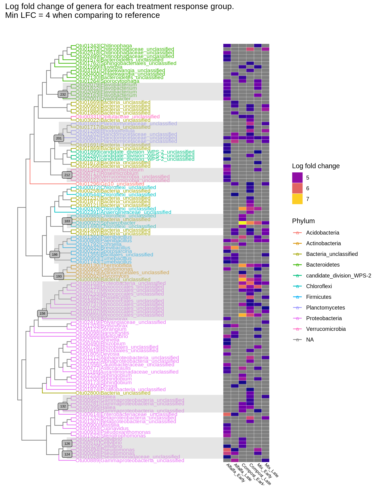

knitr::opts_knit$set(root.dir = normalizePath("."))We would like to visualize the phylogenetic relationship among the amendment responders. We do this by sub setting our data to those OTUs with a LFC of 4 in the early and late groups of each treatment.
# We have a tree for this data
tree <- read.tree("../data/tree.nwk")
# phyloseq object
inc.physeq <- readRDS("../data/incubation_physeq_Aug18.RDS")
# Combine the two
inc <- merge_phyloseq(inc.physeq, tree)
# Subset to desired samples
inc <- subset_samples(inc, day %in% c("7", "14", "21", "35", "49", "97")) %>%
filter_taxa(function(x) sum(x) >= 1, T)
inc10 <- inc %>%
filter_taxa(function(x) sum(x) >= 10, T)
#Below lines for posterity, I forget how to drop taxa sometimes
#no.unclass <- subset_taxa(inc, !Phylum=="Bacteria_unclassified")
#no.unclass <- subset_taxa(no.unclass, !Genus=="Gp6_unclassified")
rm(tree, inc.physeq)inc## phyloseq-class experiment-level object
## otu_table() OTU Table: [ 35197 taxa and 288 samples ]
## sample_data() Sample Data: [ 288 samples by 13 sample variables ]
## tax_table() Taxonomy Table: [ 35197 taxa by 6 taxonomic ranks ]
## phy_tree() Phylogenetic Tree: [ 35197 tips and 35195 internal nodes ]inc10## phyloseq-class experiment-level object
## otu_table() OTU Table: [ 11871 taxa and 288 samples ]
## sample_data() Sample Data: [ 288 samples by 13 sample variables ]
## tax_table() Taxonomy Table: [ 11871 taxa by 6 taxonomic ranks ]
## phy_tree() Phylogenetic Tree: [ 11871 tips and 11869 internal nodes ]2/3s of taxa are observed less than 10 times in the incubated samples…is this meaningful?
This tree is showing comparisons between amendment and reference, the previous example showed differences between amendment and reference plus amendment from the previous time point. This should be a more accurate representation of OTUs responding to the amendment for each
# RDS saved from
resp_alf <- readRDS("../data/LFC_alf_OTUs.RDS") %>% dplyr::rename(label = OTU)
resp_comp <- readRDS("../data/LFC_comp_OTUs.RDS") %>% dplyr::rename(label = OTU)
resp_mix <- readRDS("../data/LFC_mix_OTUs.RDS") %>% dplyr::rename(label = OTU)
resp <- rbind(resp_alf[1], resp_comp[1], resp_mix[1])
dist_all_resp <- distinct(resp)
df <- resp_alf %>%
full_join(resp_comp) %>%
full_join(resp_mix)inc_resp <- prune_taxa(c(df$label), inc) %>%
filter_taxa(function(x) sum(x) >= 1, T)inc_resp <- phy_tree(inc_resp)
inc_resp##
## Phylogenetic tree with 118 tips and 117 internal nodes.
##
## Tip labels:
## Otu00889, Otu00064, Otu00494, Otu01028, Otu00329, Otu00511, ...
## Node labels:
## 0.948, 0.906, 0.989, 0.782, 0.857, 0.949, ...
##
## Rooted; includes branch lengths.df2 = dplyr::mutate(df, newlab = paste(label, Genus, sep='|'))
head(df2)resp_p <- ggtree(inc_resp, branch.length = "none", aes(color=Phylum)) %<+% df2 +
geom_tiplab(aes(label=newlab), size=3, align=TRUE, linesize=.5) +
theme_tree() colnames(df2)## [1] "label" "Phylum"
## [3] "Class" "Order"
## [5] "Family" "Genus"
## [7] "Alfalfa_early_log2FoldChange" "Alfalfa_late_log2FoldChange"
## [9] "Compost_early_log2FoldChange" "Compost_late_log2FoldChange"
## [11] "Mix_early_log2FoldChange" "Mix_late_log2FoldChange"
## [13] "newlab"head(df2$label)## [1] "Otu00064" "Otu00138" "Otu00151" "Otu00222" "Otu00329" "Otu00477"df3 <- df2 %>%
select(label, Alfalfa_Early = Alfalfa_early_log2FoldChange, Alfalfa_Late = Alfalfa_late_log2FoldChange, Compost_Early = Compost_early_log2FoldChange, Compost_Late = Compost_late_log2FoldChange, Mix_Early = Mix_early_log2FoldChange, Mix_Late = Mix_late_log2FoldChange) %>%
column_to_rownames(var = "label")
write.csv(df3, file ="../data/resp_table.csv")
final_resp <- resp_p %>%
gheatmap(df3, offset= 35, width= .8, font.size = 2.5, colnames=T, colnames_angle=-45, hjust=0, color = "white") +
ggtitle("Log fold change of genera for each treatment response group. \nMin LFC = 4 when comparing to reference")tree_plot <- plot(final_resp) + scale_fill_viridis(option = "plasma") +
guides(fill=guide_legend(title="Log fold change"))ggsave("../Figures/resp_tree_final.png", plot = tree_plot, device = "png", width = 18.5, height = 32, units = "cm", dpi = 350)All Otus with LFC greater than 4 in all treatment response groups
# Common responders in all amendments and response groups
new_DF <- df3[rowSums(is.na(df3)) == 0,]
kable(new_DF) %>%
kable_styling(bootstrap_options = "striped") %>%
scroll_box(width = "100%")| Alfalfa_Early | Alfalfa_Late | Compost_Early | Compost_Late | Mix_Early | Mix_Late | |
|---|---|---|---|---|---|---|
| Otu00847 | 4.341184 | 4.855624 | 4.516581 | 4.529 | 4.24429 | 4.541349 |
p <- tree_plot +
geom_hilight(node = 232, fill = "gray", alpha=0.4, extend = 36) +
geom_hilight(node = 201, fill = "gray", alpha=0.4, extend = 36) +
geom_hilight(node = 212, fill = "gray", alpha=0.4, extend = 36) +
geom_hilight(node = 183, fill = "gray", alpha=0.4, extend = 36) +
geom_hilight(node = 186, fill = "gray", alpha=0.4, extend = 36) +
geom_hilight(node = 193, fill = "gray", alpha=0.4, extend = 36) +
geom_hilight(node = 158, fill = "gray", alpha=0.4, extend = 36) +
geom_hilight(node = 132, fill = "gray", alpha=0.4, extend = 36) +
geom_hilight(node = 124, fill = "gray", alpha=0.4, extend = 36) +
geom_hilight(node = 126, fill = "gray", alpha=0.4, extend = 36) +
geom_label2(aes(subset = node %in% c(232,201,212,183,186,193,158,132,124,126), label=node), size=2, color="black", fill="gray", alpha = 1)
z <- tree_plot +
geom_label2(aes(subset = !isTip, label=node), size=2, color="darkblue", alpha=1)
p
ggsave("../Figures/resp_tree_wnodes.png", plot = p, device = "png", width = 18.5, height = 32, units = "cm", dpi = 350)
ggsave("../Figures/resp_tree_allnodes.png", plot = z, device = "png", width = 18.5, height = 32, units = "cm", dpi = 350)Aliens??
treeOTUs <- df3$label
alfALIENs <- readRDS("../data/alf.aliens.rds")
compALIENs <- readRDS("../data/comp.aliens.rds")
mixALIENs <- readRDS("../data/mix.aliens.rds")
venn(list(treeOTUs, alfALIENs, compALIENs, mixALIENs), snames = c("Responder", "Alf Aliens", "Compost Aliens", "Mix Aliens"))Nope!